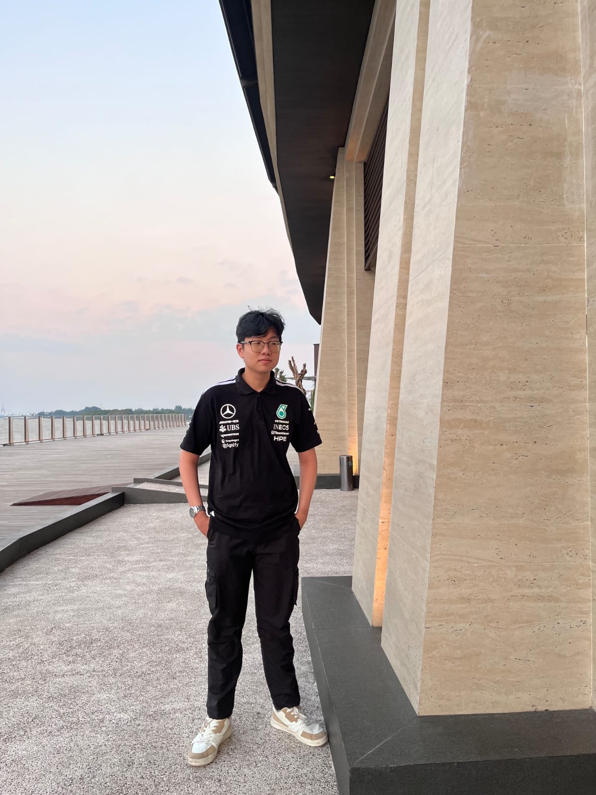

Hi, I'm Jayden Samuel Kurniawan
Computer Science undergraduate from Bina Nusantara University. What drives me is the ability to work in teams to bridge physical hardware, cloud software, and interactive interfaces to solve problems like data reliability in Indonesia.
My Specializations
Bridging hardware, intelligence, and modern software design.
Machine Learning
Analyzing complex datasets and building predictive models using tools like Google Colab, TensorFlow, and Scikit-Learn.
IoT & Systems Architecture
Connecting microcontrollers, sensors, and cloud systems to user-facing dashboards using Arduino IDE and ESP32 platforms.
Software & Design
Building mobile and web solutions with Android Studio, integrated with high-fidelity interactive prototypes designed in Figma.
Experience
Work, campus leadership, and community engagements.

Accounting Assistant (Internship)
Managed financial transactions and compliance operations for corporate accounts.
- Financial Documentation: Streamlined corporate transactional records by accurately creating and organizing invoices.
- Taxation Compliance: Supported the finance team in calculating and verifying monthly company taxation data.


Freshmen Leader
Guide and lead new students during their orientation program.
- Teach new students about Bina Nusantara rules, guidelines, and policy.
- Consult and guide new students personally, learning their troubles and adaptation problems, while finding a solution.

Toddler Ministry Co-Leader
Directing weekly operations to facilitate impactful ministry programs.
- Involved in planning rundowns, special services, and curricular materials for the toddler ministry.
- Directing weekly operations to facilitate impactful ministry programs.
Certifications & Research

Smart Motorcycle Tire Monitoring System
Designed and engineered a non-invasive IoT prototype aimed at enhancing road safety and sustainable urban mobility by monitoring motorcycle tire deflation in real time.
- Non-Invasive Hardware Design: Integrated an ESP32 microcontroller with high-precision ultrasonic sensors to track tire-to-ground clearance anomalies without modifying existing vehicle components.
- Real-Time Telemetry & Alerting: Programmed a live buzzer module for immediate operator warnings alongside an automated Telegram Bot API integration for remote, instant puncture notifications.
- Paper Publication: Synthesized methodology and technical benchmarks into a peer-reviewed paper accepted for presentation at the ICOBAR 2025 conference.


Regression-Based Calibration for MQ Gas Sensors
Developed semi-empirical electronic response calibration models for MQ gas sensors to translate analog voltage readings into precise PPM concentration metrics.
- Regression Modeling: Applied non-linear regression techniques to map raw sensor readings to accurate gas concentration metrics.
- IoT Integration: Deployed calibration formulas directly onto an ESP32 microcontroller for real-time edge processing, LCD display, and cloud data streaming
- Paper Publication: Synthesized data collection methodologies and calibration benchmarks into a research paper accepted for presentation at ICCSCI 2026.
AQI Monitoring System
Designed and engineered a real-time Air Quality Index (AQI) monitoring system that integrates multiple gas sensors and a particulate matter sensor to provide enviromantal data for a variety of pollutants.
- Multiple Sensor Implementation: Integrated an ESP32 microcontroller with multiple gas sensors, namely MQ-135 for NO2 and CO2, MQ-136 for SO2, MQ-131 for O3, MQ-7 for CO, and a PM2.5 for smoke detection.
- Real-Time Telemetry & Alerting: Integrated with Thingspeak Platform for live data visualization and historical analysis alongside an automated Telegram Bot API integration for remote, instant notifications.
- Paper Publication: Synthesized methodology and technical benchmarks into a peer-reviewed paper accepted for presentation at the ICORIS 2026 conference.
Featured Projects
Real-world implementations built and deployed.
PneuScan AI Portal
Developed an advanced medical imaging pipeline designed to automate the screening and deeper categorical analysis of pneumonia from digital chest X-rays.
- Supervised Feature Extraction: Fine-tuned MobileNetV2 CNN framework for high-accuracy binary classification (Normal vs. Pneumonia).
- Unsupervised Subtype Segmentation: K-Means Clustering on deep features to group latent structural variations within positive cases.
- Edge Deployment Ready: Lightweight architecture optimized for clinical edge devices and cloud web portals.
Live Air Quality AI Dashboard
Developed an end-to-end environmental monitoring system designed to provide high-granularity Air Quality Index (AQI) data through a robust edge-to-cloud pipeline.
- Hybrid Hardware Integration: Dual-microcontroller system (Arduino Mega + ESP32 wireless gateway).
- Multi-Modal Sensing: MQ gas sensors & PM2.5 optical sensors tracking CO2, smoke, and fine particulate pollutants.
- Anomaly Detection: Isolation Forest ML model flagging environmental irregularities and sensor drift.
Fictional Fashion Brand Website
Developed an end-to-end e-commerce platform for a fictional fashion brand.
- Responsive Design: Ensured the website is fully responsive across most device sizes. Ensures every button is accessible and functional.
- Field Validation: Implemented robust form validation to ensure every input is correctly formatted according to company policy and within acceptable ranges
Let's Build Together
Whether you have a project idea, research collaboration, or engineering opportunity, feel free to connect with me.